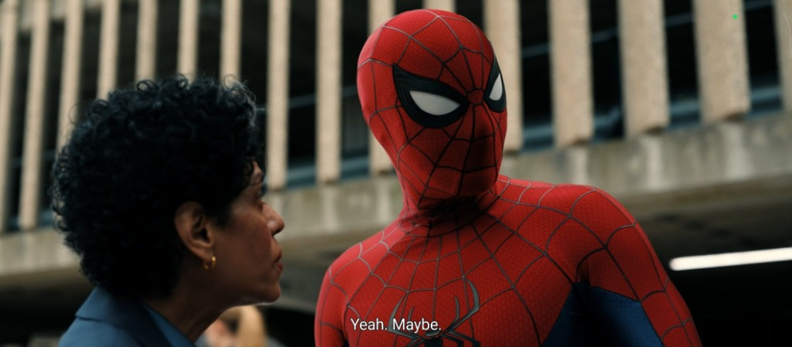
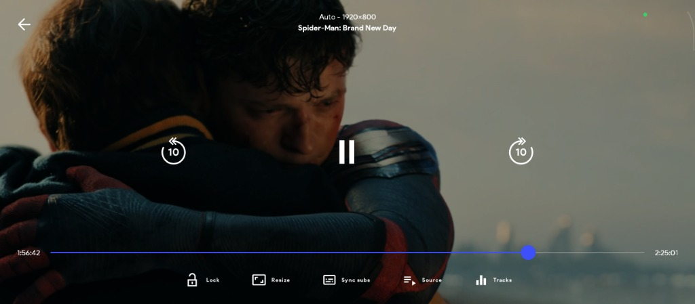
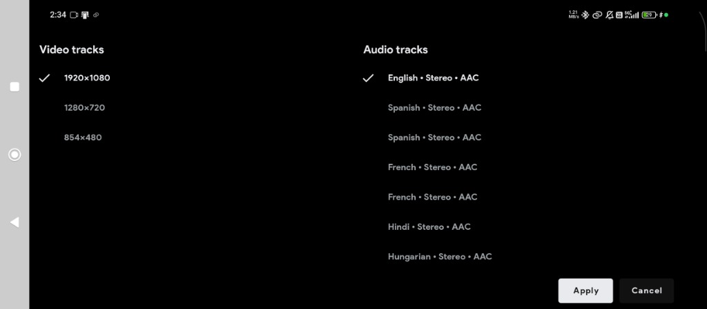
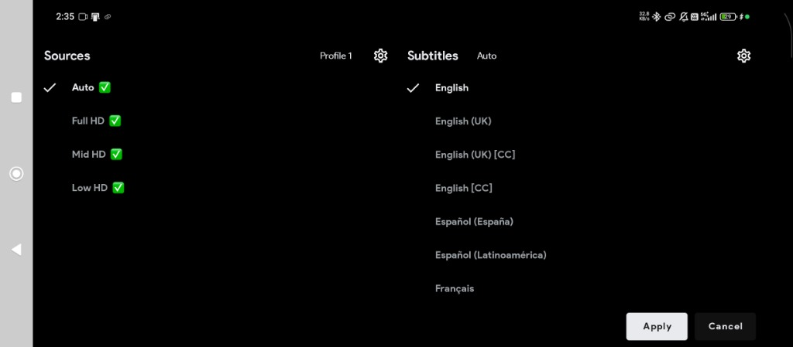

VerseStream – Watch Anything, Anytime.
Your ultimate destination for Movies, TV Shows, Anime, and K-Dramas. Enjoy uninterrupted, high-quality streaming across all your devices—mobile (Android & iOS), tablets, Android TV, Fire TV, and any web browser.
Trending Movies, Series & Anime


📲 Download the VerseStream App (v1.0)
Universal APK
Recommended if unsure: Android phones, Android TV and Fire TV. Choose this when unsure.
📦 APK Size: 74.1 MB
Download APK64-bit ARM Devices
For Android phones and TVs running 64-bit Android.
📦 APK Size: 45.1 MB
Download APK32-bit ARM Devices
For Android phones, Android TV and Fire TV running 32-bit Android.
📦 APK Size: 44.9 MB
Download APKEmulator x86_64 (64-bit)
For Android emulators or devices with a 64-bit x86 Android system. Usually for computer emulators.
📦 APK Size: 45.6 MB
Download APKEmulator x86 (32-bit)
For Android emulators or devices with a 32-bit x86 Android system. Usually for computer emulators.
📦 APK Size: 45.7 MB
Download APKNot sure which version to choose?
We recommend the Universal APK - start here for Android TV and Fire TV if the OS architecture is unknown. Requires Android 7.0 or newer. Choose a smaller 32-bit or 64-bit APK only if you know which Android version your device uses. The emulator downloads are usually for computers.
VerseStream — Guide to Servers, Sources, and Downloads
VerseStream checks preferred servers first. Start with a ready server while other checks continue; later results do not interrupt your video. Source availability and quality vary by provider. Select a specific source from your chosen server to find different languages, qualities, or video formats.
A server handles stream routing (Fast Server, Cloud CDN, Ultra Route, Global Mirror, etc.). Since network conditions and speeds can vary, you can easily switch to an alternative server with one click if your current connection is buffering.
A source represents a specific version of the video across categorized providers (MultiMovies, MoviesDrive, MovieBox). It allows you to select your preferred resolution (4K, 1080p, CamHD), dual-audio language, or subtitle format.
Settings & Offline Downloads – Manage extensions, ISP bypasses, subtitle caching, and save videos to watch offline anytime, anywhere.
Note: VerseStream enables in-app downloads, multi-language subtitle tracks, layout customizer, and cloud extensions. Manage downloads and app player settings directly inside the settings hub.
Stream Seamlessly on Android TV
Experience your favorite movies, series, and anime on the big screen with smooth, high-quality playback—with improved remote focus, selectable loading controls and menus that stay open during source checks on compatible Android TV and Fire TV devices.

Master-Grade Player & Multi-Track Engine
Engineered for cinema enthusiasts. Experience complete playback control with on-the-fly audio dubbing, multi-resolution switching, and frame-accurate subtitle sync.
Full-Control Cinema Player HUD
Take command of your movies with intuitive touch gestures and one-tap toggles. Never let accidental touches interrupt dramatic climaxes.
- ✓ Touch Screen Lock: Instantly lock the screen with one tap to avoid accidental touches while holding your phone or tablet.
- ✓ Dynamic Aspect Ratio (Resize): Toggle effortlessly between Zoom, Stretch, Fit-to-Screen, and Original 21:9 Cinema ratio.
- ✓ Sync Subs (Subtitle Adjuster): Real-time millisecond subtitle delay/advance calibration for perfect dialogue lip sync.
- ✓ Quick 10s Double-Tap Skip: Fast-forward or rewind seamlessly with a high-precision scrubber timeline bar.


Switch Languages & Resolution On-The-Fly
Enjoy global cinema in your preferred language. VerseStream extracts multiple audio streams directly from the source so you can switch instantly without buffering.
- ✓ Multi-Language Audio Dubs: Seamlessly toggle between Hindi Stereo AAC, English, Spanish, French, Hungarian, and regional tracks.
- ✓ Multi-Resolution Ladder: Switch between 1920×1080 Full HD, 1280×720 HD, and 854×480 Data Saver to match your cellular or Wi-Fi speed.
- ✓ Clean Stereo & Spatial Decoding: High-bitrate audio pass-through with zero distortion for headphones, soundbars, and TV speakers.
Smart Quality Profiles & Global Subtitles
Stream effortlessly with smart quality presets and multi-language subtitle tracks complete with accessibility Closed Captions (CC).
- ✓ Adaptive Quality Profiles: Choose Auto, Full HD, Mid HD, or Low HD presets to eliminate buffering on slower connections.
- ✓ Closed Captions [CC]: Includes accessibility captions for the hearing impaired and detailed audio descriptions.
- ✓ Comprehensive Subtitle Library: English (UK/US), Spanish (Spain/LatAm), French, and custom external SRT/VTT file import.

Watch What You Love, Wherever You Are
Our App is fully supported on Android, Android
TV, and Fire TV.
Our Web is supported across all browsers (iOS & Android etc)
Android
Phones & Tablets
Android TV
Smart TVs & TV Boxes
Fire TV
FireStick & Fire TV Cube
🚀 Why Choose VerseStream?
VerseBox Add-ons & Playlists
Import supported Stremio, CloudStream and Nuvio repositories, or browse your own M3U playlists. Availability depends on the provider.
TV + Mobile Support
Android phone, Android TV and Fire TV support with improved remote navigation and focus. Android 7.0 or newer required.
Fast Search
Find titles across supported sources, revisit recent searches, and use optional Lite mode to reduce effects and background work on older devices.
TV Advertising Removed
The updated TV client removes VerseStream advertising screens. Content sign-in, subscriptions and server access requirements still apply; phone and tablet ad rules are unchanged.
Built-in Offline Downloads
Download supported movies and episodes, manage the queue, and play completed downloads offline. Keep 1DM as an optional alternative.
Multi-Language Content
Enjoy diverse content with audio tracks in Hindi, English, Tamil, Telugu, Japanese, and more.
Multiple Quality Streams
Save your preferred quality, including 1440p or 2160p, and audio/subtitle languages. Choices apply when the source offers them.
Subtitles Available
Adjust subtitle size, position, colors and timing. Updated SRT/VTT rendering fixes selected captions showing no text, including files sharing a language.
Worldwide Content
Explore a vast collection of international movies, series, and trending anime.
Frequently Asked Questions & Guides
Everything you need to know about installing, using, and troubleshooting VerseStream.
VerseStream v1.0 brings these improvements:
- Season selection: the highlighted season stays in sync with the episodes shown in Details and the player's Episodes menu.
- Correct episodes: improved show and episode matching, plus fixes for Next Episode and moving into the next season. Each episode fetches fresh sources to prevent loading from getting stuck.
- Watch history: one card per show with the most recently played episode, while keeping individual episode progress. Removing a show clears all its episode history without affecting downloads or watchlists.
- Live channels: history cards hide progress and remaining time, and live playback skips saved-position seeking.
- TV seeking: releasing the remote arrow finishes seeking, and delayed or duplicate events are ignored. Install the updated APK for these changes; verification on the affected physical TV is still pending.
- Episode controls: layout and sort buttons align with the season buttons.
- Ad retries: Try Again reuses a valid session or gets a fresh link after expiry, without duplicate requests from repeated taps.
- NxBox imports: use CloudStream repository short codes or full plugin and playlist links.
- Offline NxBox help: open the new guide from NxBox or App & Player Settings.
- Update installation: Install opens Android's installer, continues after permission approval and keeps downloaded APKs for retry.
- Ad-pass wording: access is described as up to 24 hours.
See the full changelog below for details and earlier v2.4 improvements.
1 November 2026
Seasons and episodes
- Fixed Season 1 staying highlighted after choosing another season on the Details screen.
- The player's Episodes menu now keeps the highlighted season in sync with the episodes shown, including when you reopen it or change episodes.
- Improved server matching to help open the correct show and episode.
- Fixed Next Episode handling when advancing through episodes and into the next season. Late results from an earlier episode no longer replace the current selection.
- Fixed Next Episode getting stuck on loading. Each episode starts a fresh playback session and fetches its own sources instead of reusing the previous episode's links or playback state.
- Centered the episode layout and sort buttons with the season buttons.
Watch history and live channels
- Continue Watching and Watch History now show one card per show with its most recently played episode, including rewatches of earlier seasons. Individual episode progress is retained.
- Completing the latest episode no longer brings an older unfinished episode back into Continue Watching.
- Removing a show from history clears its saved episode history and progress so older episodes do not reappear. Downloads and watchlists are unaffected.
- Live-TV history cards no longer show a progress bar or remaining time. Opening a live channel skips saved-position seeking; movies and episodes keep their normal resume behavior.
TV remote seeking
- Releasing the remote arrow now finishes seeking. Late repeat or duplicate seek events are ignored.
- Seeking is cancelled when player controls are hidden or the player window loses focus.
- These changes require the updated Android APK. Verification on the affected physical TV is still pending.
Ad-session retries
- Try Again reuses a valid session, or requests a fresh session and ad link when the previous one has expired or is missing.
- Repeated taps no longer create duplicate requests.
- Ad-pass wording now says up to 24 hours of access.
NxBox imports and offline help
- Enter a CloudStream repository short code in NxBox > Import. Full plugin and playlist links still work in the same field.
- The field is now labelled Plugin link or short code, with help for CloudStream, Nuvio, Stremio and M3U/M3U8 playlist links. Short codes apply to CloudStream only.
- Open the new offline NxBox guide from NxBox or App & Player Settings for help adding plugins, starting playback, managing backups, using TV controls and solving common problems.
- The guide uses medium-sized text, smaller headings and tighter spacing, with large navigation buttons.
Update installation
- Install now opens Android's package installer for the downloaded APK instead of a browser. Installation continues after you grant installation permission.
- Failed installs keep the downloaded APK available for retry. Completed update downloads are restored after restarting the app.
- Improved update-dialog scrolling and TV remote focus. Unavailable notifications no longer block downloading.
- Known TV limitation: Back navigation can become unresponsive on the tested Android 16 TV emulator. Use the update dialog's Close button if affected. Physical-device verification remains incomplete.
Install the latest v1.0 Android app to receive these changes.
Earlier improvements in v2.4
30 October 2026
A lighter app for older devices
- Turn on Lite mode in App & Player Settings to reduce effects and background activity.
- Lite mode keeps your chosen video quality. Open the next video to apply the playback changes.
- Fixed the app closing when opening a video on some Android 8.0 TVs.
- Improved startup and reduced unnecessary loading while browsing and watching.
Smoother playback
- Start watching from a ready server while other choices continue loading.
- A broken video-quality option no longer hides the working options.
- Use Retry to reopen a video where you left off, or Change server when another choice is available.
- Brief connection drops keep your selected source. The player can retry when the connection returns.
- Server and source menus stay open during automatic switching until you choose an item or close the menu.
- Refreshed player controls, clearer loading messages, and improved fullscreen viewing.
- Improved headphone play/pause controls and brightness and volume gestures.
Better TV remote controls
- Move through server lists without the selection jumping back to the active server.
- Up and Down follow the list; Down stops at the last server.
- Improved navigation between the seek bar, subtitles, player menus and episode lists.
- Your selected player control is remembered during loading.
- Improved Back, Close and Cancel controls while content loads.
- Provider settings are easier to scroll, save and close. Returning keeps your place in the list.
- Fixed navigation from loading previews back to the Home tabs.
Clearer subtitles
- Fixed subtitles showing as selected without displaying any text.
- Improved selection when several subtitle choices share the same language.
- A subtitle-loading problem no longer stops a working video.
- Move supported subtitles earlier or later with Subtitles > Subtitle settings. Changes work while playing or paused.
- Change text size, position, colors, background, outline and shadow. Your appearance choices are saved.
- On TV, select a number field and press OK to type; Done returns to that field.
- Timing adjustment works with separate SRT/VTT subtitle files. It cannot move text already part of the video, embedded tracks or live-stream subtitles.
- Fixed duplicate captions after changing subtitle appearance. Settings stay unavailable when there are no supported tracks.
Downloads inside VerseStream
- Download supported movies and episodes without installing another downloader. 1DM is optional.
- Use the download icon beside Play or on an episode, then choose a server, source and available quality or tracks.
- Open My Space > Downloads to see all items, pause, resume, retry or remove them.
- Use Change source if a download fails. Returning to source selection keeps your recent choices and place.
- See clearer progress, file sizes and download notifications. Estimated sizes are marked with ~.
- Watch completed downloads offline with the familiar VerseStream player and resume where you stopped.
- Choose Auto, Balanced or Fast, and how many videos to download at once. More downloads do not guarantee faster speeds.
- New settings allow mobile data as well as Wi-Fi. Enable Wi-Fi-only if you want to avoid mobile-data use.
- Background downloads depend on your device. Live streams, protected videos and some sources cannot be saved. Separate online subtitle files are not included.
More choices in NxBox
- Import supported Stremio, CloudStream and Nuvio add-ons, or open your own M3U playlists.
- Enabled sources with browsing lists appear as Home tabs. Sources that only supply video links can appear in the player instead.
- Browse catalogs, search titles, filter by genre, and view available movies, seasons and episodes.
- Manage sources with clearer enable, disable, update, settings and uninstall actions.
- Improved support for CloudStream videos, live channels, provider settings and returning to saved titles.
- Improved Nuvio loading so slow sources have more time to find videos. Another source can still be used if one fails.
- Errors appear beside the affected action, with clearer ways to retry.
- Import can fill an empty link field from your clipboard. Nothing installs automatically.
- Only add sources you trust. Available content and accounts depend on the source; torrent-only playback is not supported.
Your sites and playlists
- Use Clone site with supported CloudStream providers to save a named site, then Edit, Remove or Browse it.
- For XtreamIPTV, enter the server address, username and password from your own service. No account or channels are included.
- For M3UPlaylistPlayer, add your playlist in its settings and Save without restarting.
- Compatible provider settings update the available groups and browsing lists after saving.
- Search playlist channels by name and browse their categories.
Easier browsing
- Browse dedicated Anime and KDrama Home categories. NxBox takes the place of Reels.
- Switch between provider Home tabs and open a full list from its heading arrow.
- Working lists can appear even if another list is slow or unavailable. Empty rows no longer leave large gaps.
- Refresh supported lists without losing the content already on screen. TV users also have a refresh action.
- Choose Provider default, Portrait or Landscape for search and browsing artwork in NxBox settings or Filters.
- Choose a horizontal episode row or a vertical list with descriptions and download buttons. Your season and episode order stay selected.
- Improved phone scrolling, search positioning, long labels and layouts on tablets and TVs.
- The expanded Network Stream screen lets you open your own video links and enter extra details when your service requires them.
Your viewing preferences
- Open My Space > App & Player Settings to choose preferred audio, subtitle language and video quality.
- Quality choices include 1440p and 4K when the source provides them. Language choices also depend on the video.
- Choose whether subtitles start on or off, and manage available startup notices.
- Enable, disable or reorder servers, and decide whether to switch automatically after a failure.
- On phones and tablets, use touch lock to prevent accidental taps. Tap to reveal Unlock, or press Android Back to unlock first.
History, saved titles and backups
- Continue Watching works for guests and signed-in users, including supported add-on content.
- Improved episode resume, saved progress and watch-history layouts. Deleted history stays deleted.
- Revisit recent searches or clear them. Watchlist changes can sync when your connection returns.
- Re-enable or reinstall a removed source before opening its saved titles.
- Save or restore a password-protected NxBox backup from My Space > App & Player Settings > NxBox.
- Backups include add-ons, source settings and playlist references. They do not include your account, watch history, downloaded videos or every app setting.
- Keep your backup password safe; you need it to restore the file.
TV ads and accounts
- The updated Android TV and Fire TV app removes VerseStream watch-ad screens, sponsor QR screens, popup banners and ad videos.
- A premium plan is not needed just to hide these TV ads. Content sign-in and subscription requirements still apply.
- Phone and tablet advertising rules are unchanged.
- Temporary profile or device-list loading problems no longer automatically send you back to sign-in.
- Clearer account and subscription information, corrected device icons, and a visible app version in My Space.
- Payment-proof images have a clear 1 MB size limit. Back from an unfinished ad check returns to browsing.
Connection and update fixes
- Clearer messages for slow connections, unavailable sources and failed requests.
- Brief connection changes are less likely to interrupt browsing with an offline screen.
- Improved sign-in recovery, QR sign-in and app update installation prompts.
These earlier improvements are also included in v1.0. Available content and features depend on your device and source.
VerseStream is an Android app for browsing and playing movies, series, anime and supported third-party content. It supports Android phones, tablets, Android TV and Fire TV. NxBox adds supported add-ons and your own playlists. Content and source access depend on the provider; some features require sign-in or a subscription.
All downloads are v1.0 and need Android 7.0 or newer.
- Universal - recommended if unsure: the easiest choice for supported Android phones, tablets and TVs. It is a larger download.
- 64-bit ARM: a smaller download if your device runs 64-bit Android.
- 32-bit ARM: a smaller download if your device runs 32-bit Android.
- Emulator x86 / x86_64: choose the matching version for your Android emulator. These are usually not the right choice for a phone or TV.
A device with a 64-bit processor can still run 32-bit Android. If you cannot confirm which version it uses, choose Universal. HD or 4K screen resolution does not determine the APK you need.
Choose Universal if you are unsure. It is our recommended starting point for compatible Android TV and Fire TV devices.
Choose 32-bit ARM if your TV runs 32-bit Android, or 64-bit ARM if it runs 64-bit Android. There is no separate TV-only APK. The emulator downloads are usually for computers running an Android emulator.
Your TV must support Android app installation and Android 7.0 or newer. Samsung Tizen, LG webOS, Roku and Apple TV cannot install these APKs directly. Fire TV must use a compatible Android-based system.
- Download the matching APK from the download cards on this website; choose Universal when unsure.
- Open the downloaded APK. If prompted, allow Install unknown apps for the browser or file manager you used.
- Confirm installation, then open VerseStream.
- After installation, you can turn that install permission off again.
These are Android APKs. On iPhone or iPad, use the website's Watch Online link instead.
- Check the APK guidance above and download Universal if your TV's OS architecture is unknown.
- Transfer the APK using a USB drive, or a file-transfer app available on both your phone and TV. You can also download it using a browser supported by your TV.
- Open the APK using the TV's file manager.
- Allow Install unknown apps for that browser or file manager in the TV's security settings, then confirm installation. Setting names vary by TV/Fire OS version.
- Open VerseStream and use the directional remote buttons and OK to select controls; Back closes menus or returns.
Install only on Android-based TVs or boxes that support APK installation. You can disable the install permission afterward.
Download the latest APK and install it over your current VerseStream app. Check the installed version at the bottom of My Space.
For in-app updates, download the update, then select Install to open Android's package installer. If prompted, allow installation from VerseStream; installation continues after permission is granted. Failed installs keep the APK available for retry, and completed downloads are restored after restarting the app. Notification problems no longer block downloading.
On TV, update-dialog scrolling and remote focus have improved. Known limitation: Back can become unresponsive on the tested Android 16 TV emulator; use the dialog's Close button if affected. Physical-device verification remains incomplete.
If installation fails, check Android 7.0 or newer, available storage and that the download completed. Try Universal if you are unsure which APK to choose. If Android says the app conflicts with the installed version, contact support before removing anything.
Avoid uninstalling as a first step: it can remove local history, preferences and downloads. NxBox backups cover add-ons and playlist references, not your history, account or downloaded videos.
Use an Android emulator for your computer that runs Android 7.0 or newer.
Choose Emulator x86_64 for a 64-bit x86 emulator, or Emulator x86 for a 32-bit x86 emulator. If its settings say ARM, choose the matching ARM APK. Choose Universal when unsure.
Install the APK using your emulator's app installation controls. You can also use the website's Watch Online link in a browser.
Open NxBox > Import and use Plugin link or short code to enter a supported repository/add-on link, direct CloudStream extension link, CloudStream repository short code or M3U/M3U8 playlist link. You can also select your own playlist file. Short codes apply to CloudStream only. Press Import, review the source and enable the providers you want. Clipboard autofill accepts links and short codes without importing or installing anything automatically.
Supported integrations include Stremio, CloudStream and Nuvio. Only enable extensions from authors you trust. Nuvio also needs a working Android System WebView.
Enabled providers with browsing catalogs appear in the Home tab menu. Use a row's heading arrow to view its full catalog. Stream-only providers can appear as playback servers without a Home tab. Manage provider settings, updates, disable/uninstall actions and available Browse actions in the repository screen.
In App & Player Settings > NxBox, choose Provider default, Portrait or Landscape independently for search and browsing lists; catalog Filters also offer layout selection.
Provider errors, website checks, accounts and available catalogs depend on the source. Torrent-only playback is not supported.
Open the NxBox guide from NxBox or App & Player Settings. The guide is bundled with the app and can be read offline.
It covers supported import formats, adding and managing plugins, starting playback, backups, TV controls and common problems. Medium-sized text, smaller headings and tighter spacing keep topics readable, with large buttons for navigation.
Reading the guide works offline; importing sources and watching online content still need a connection.
For supported enabled CloudStream providers, use Clone site in the NxBox repository screen to create a named configuration. Saved sites have Edit, Remove and Browse actions.
For XtreamIPTV, enter the server address, username and password from your own IPTV service. The template does not include an account or channels. For M3UPlaylistPlayer, open its settings, add your playlist and Save.
On TV, move to a field and press OK to type; Done returns to the field. Use Save to apply supported provider settings, or Back/Cancel to return. Available provider options and channels depend on the extension and service.
Preferred app servers are checked first. Ready servers can play while background checks continue; later results do not interrupt current playback. A server is a provider/host; a source is one of its available video links, qualities or languages.
Select a ready server and source. Server/source menus remain open during automatic switching and loading; select an item or use Close/Back to dismiss them.
For a playback error, use Retry to reopen at the saved position. Change server appears when another usable server is available. Brief disconnections keep the current source; when offline playback fails, the player can wait for reconnection and retry it.
Use My Space > App & Player Settings > Server Management to enable, disable or reorder servers, and adjust automatic switching/error rules. No setting guarantees a source is available.
Startup can use a working source while other sources are still being checked. A broken quality link no longer hides working alternatives. On TV, Up/Down follows the server list, Down stops at the last row, and background updates keep focus on the row you are browsing. The latest v1.0 app also fixes a video-opening crash on some Android 8.0 TVs.
1DM is no longer required. VerseStream can download supported movies and episodes internally.
- Use the download icon beside Play or on an episode card. A separate source screen checks available servers.
- Choose a server/source and available quality, audio tracks and subtitles before starting. Size may be an estimate, marked ~.
- Open My Space > Downloads to view All, check progress, pause, resume, retry or remove items. Change source can restart a failed item using another source.
- Open a completed download to watch offline with VerseStream's player and resume progress.
Live streams, protected videos and some sources cannot be downloaded. Separate online subtitle files are not included. Some videos can only be watched online; download setup explains when they cannot be saved. Background downloading depends on Android and the device's restrictions.
Open My Space > App & Player Settings > Downloads. Choose VerseStream for built-in downloading; choose 1DM only if you want the external method and have installed it.
New settings allow Any network, which includes mobile data; an existing Wi-Fi-only choice is preserved. Enable Wi-Fi-only if you want to avoid mobile-data use.
Start with one simultaneous video (the default) to concentrate bandwidth. Try Auto, Balanced or Fast to find what works best for your device and connection. More parallel downloads or Fast mode do not guarantee higher speed. Settings offer up to 40 simultaneous videos; source speed, storage and connection remain the limits.
Use storage controls to manage saved videos. Going back from source selection retains recent checks and your position; use Refresh sources to request fresh links.
Open My Space > App & Player Settings and turn on Lite mode. It starts Off, and your choice is saved.
Lite mode reduces visual effects and background activity, uses smaller pictures where supported, and stops the Home carousel from moving automatically. You can still browse it yourself. Your selected video quality stays the same.
Open the next video to apply the playback changes. Results depend on your device and connection. Install the latest v1.0 app to get these improvements.
Open My Space > App & Player Settings to choose default audio/subtitle languages, subtitles on/off, preferred quality (including 1440p and 2160p where available), and server preferences. These settings select tracks the source supplies; they do not add missing languages or quality.
On a series Details screen, use the layout icon before the reverse-order button to switch between a horizontal episode row and vertical list. Your selected season and order are retained.
On phones/tablets, use the touch lock beside rotation lock to hide controls and disable gestures. Tap the locked screen to reveal the gray unlock button, or press Android Back to unlock first. TV uses remote controls and has no touch-lock button.
Open Subtitles > Subtitle settings when supported tracks are available. Use plus/minus or select the delay field to type positive/negative decimal seconds, then Reset if needed. On TV, press OK to type and Done to return focus.
Live timing adjustment works on Android with separate SRT/VTT files once ready, including while paused. It does not retime embedded tracks, live-stream subtitles or text already drawn into the picture. An unavailable timing field explains why it is read-only.
Adjust text size, bottom padding, text/background colors, background opacity, outline or shadow. Size/padding take whole numbers. Appearance choices are saved for future videos; image subtitles and text drawn into the video keep their original appearance.
The updated player fixes selected subtitles not appearing and makes it easier to choose between files with the same language. A subtitle-loading problem no longer stops a working video. Install the latest v1.0 app for these fixes.
Open My Space > App & Player Settings > NxBox and choose the backup action. Set a password and save the encrypted backup file somewhere you can access later.
To restore, choose the backup file and enter its password. Keep that password safe; it is required to restore.
Backups include NxBox add-ons, repository/provider preferences and playlist references, including configured sites. They do not include your account, watch history, downloaded videos or every app setting. Some add-ons may need an internet connection again after restoring.
The updated Android TV/Fire TV client removes VerseStream watch-ad steps, sponsor QR screens, popup banners and ad videos. A premium plan is not needed just to hide these TV ads. Content sign-in and subscription requirements still apply. Phone/tablet advertising rules are unchanged. Where an ad pass applies, access is described as up to 24 hours. Try Again reuses a valid session or gets a fresh link after expiry; repeated taps no longer create duplicate requests.
Continue Watching uses encrypted local history for guests and signed-in users, including supported provider content. Continue Watching and Watch History show one card per show with its most recently played episode, including rewatches, while retaining individual episode progress. Completing the latest episode no longer brings back an older unfinished episode. Removing a show clears all its saved episode history and progress; downloads and watchlists are unaffected. Live-channel cards hide progress and remaining time, and live playback skips saved-position seeking. Movies and episodes keep normal resume behavior. A removed or disabled provider must be installed/enabled before its saved titles can open. Watchlist changes can sync when your connection returns.
Recent searches can be reused or cleared. Temporary account/network loading errors have clearer recovery messages. Payment-proof images must be no larger than 1 MB.
VerseStream does not host, store, or distribute copyrighted content. It indexes links supplied by third-party providers. Use only content and playlists you are authorized to access. Provider availability and compatibility vary. For copyright concerns, refer to the website policies or contact support@versestream.app.
Still stuck? Contact us via Telegram or the help center.
Join our official VerseStream channels for fast technical assistance, mirror updates, and community discussion.